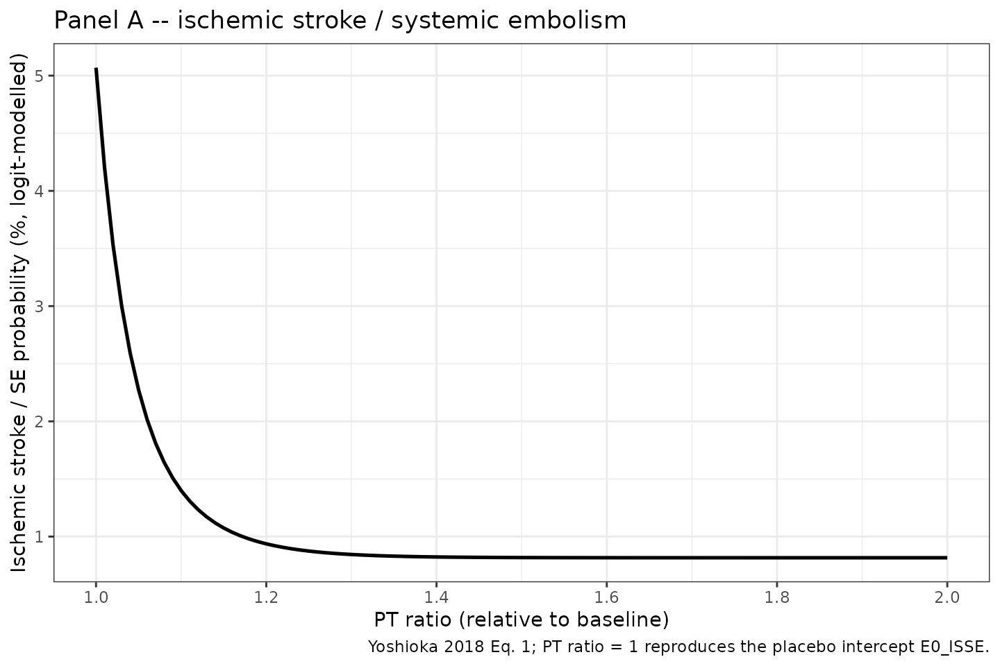
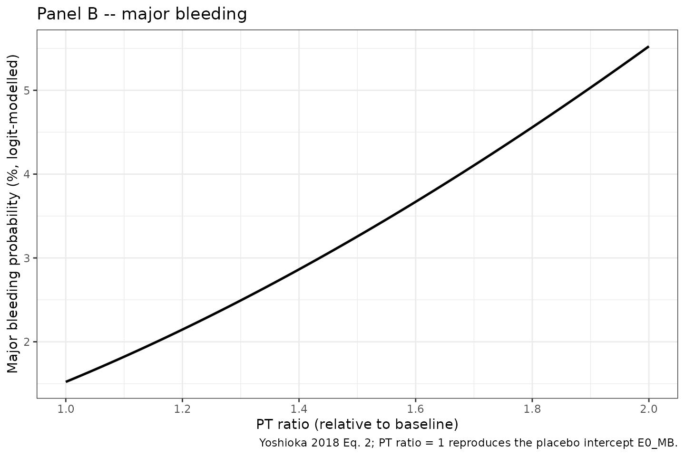
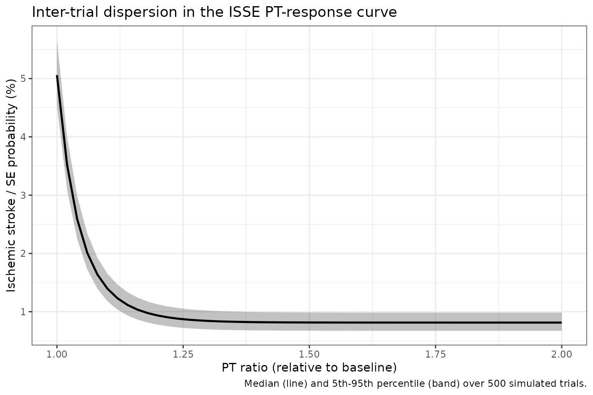

FXa inhibitors PT-ratio MBMA (Yoshioka 2018)
Source:vignettes/articles/Yoshioka_2018_FXa_inhibitors_mbma.Rmd
Yoshioka_2018_FXa_inhibitors_mbma.RmdModel and source
- Citation: Yoshioka H, Sato H, Hatakeyama H, Hisaka A. Model-based meta-analysis to evaluate optimal doses of direct oral factor Xa inhibitors in atrial fibrillation patients. Blood Adv. 2018;2(10):1066-1076. doi:10.1182/bloodadvances.2017013805.
- Description: MBMA. PT-ratio-driven logistic event-rate model for direct oral factor Xa inhibitors (rivaroxaban, apixaban, edoxaban) in non-valvular atrial fibrillation. Inputs a population-mean prothrombin-time ratio (PTR) supplied per observation time; outputs per-arm probability of ischemic stroke/SE (p_isse) and of major bleeding (p_mb), plus a derived per-arm mortality probability. Fit by NONMEM 7.3 to per-arm event counts from 5 large RCTs (Yoshioka 2018; 57,655 patients). Suitable for simulating per-arm summary outcomes only; the upstream popPK -> PT-ratio layer for each FXa inhibitor is out of scope and PTR must be supplied externally.
- Article (open access): https://doi.org/10.1182/bloodadvances.2017013805
Population
Yoshioka 2018 carried out a model-based meta-analysis (MBMA) of five randomised double-blind trials of direct oral factor Xa (FXa) inhibitors versus dose-adjusted warfarin or aspirin in adults with non-valvular atrial fibrillation (AF). The pooled population spans 57,655 patients across 10 trial arms (Yoshioka 2018 Table 1):
- ROCKET AF: rivaroxaban 20 mg OD (n = 7,131) vs warfarin (n = 7,133).
- J-ROCKET AF: rivaroxaban 15 mg OD (n = 639) vs warfarin (n = 639).
- ARISTOTLE: apixaban 5 mg BID (n = 9,120) vs warfarin (n = 9,081).
- AVERROES: apixaban 5 mg BID (n = 2,807). The aspirin comparator arm was excluded by the source authors because aspirin was an active rather than placebo control.
- ENGAGE AF-TIMI 48: edoxaban 60 mg OD high-dose (n = 7,035), edoxaban 30 mg OD low-dose (n = 7,034), vs warfarin (n = 7,036).
Cohort baseline characteristics (age, sex, body weight, lean body mass, creatinine clearance, CHADS2 score, comorbidities, concomitant medication, prior anti-thrombotic use) are tabulated per arm in Yoshioka 2018 Table 1 and are not used as covariates in the MBMA event-rate layer modelled here; covariates were explored for the intertrial variance on the placebo ISSE log-odds but none were retained.
The data points used for MBMA fitting are the per-arm observed event rates of ischemic stroke / systemic embolism (ISSE) and major bleeding (MB), with the per-arm exposure-time and total patient counts as the weighting structure. The model therefore predicts per-arm population-mean event probabilities, not individual concentrations or individual events.
The same information is available programmatically via
rxode2::rxode(readModelDb("Yoshioka_2018_FXa_inhibitors_mbma"))$population.
Scope of this extraction (what is and isn’t included)
The Yoshioka 2018 modelling pipeline has two distinct layers:
PK / PK-PD layer (dose -> plasma concentration -> PT ratio). For each FXa inhibitor the population PK and PT models were taken from prior publications: Girgis 2014 (rivaroxaban, ref 21); Leil 2014 and Chang 2016 (apixaban, refs 22, 24); Krekels 2016 and Koretsune 2015 (edoxaban, refs 23, 25). The Yoshioka 2018 main text describes these models in prose only – the structural parameters (compartments, ka, CL, V, residual error) appear only in “supplemental Methods and supplemental Table 1.” That data supplement is not on disk in the source archive for this extraction and is therefore out of scope for this model. The published slope-of-PT adjustments to RecombiplasTin reagent equivalence per Gosselin 2016 (ref 26) are similarly in the supplement and are not re-derived here.
MBMA event-rate layer (PT ratio -> event probability). This is the original contribution of Yoshioka 2018 and is fully specified in the main text (equations 1 and 2; Table 2 final parameter estimates). It takes a population-mean PT ratio (PTR) as input and returns the per-arm probability of ISSE and MB, plus a derived mortality probability per equation 3.
The packaged Yoshioka_2018_FXa_inhibitors_mbma model
implements layer 2 only. To reproduce the headline dose-optimization
results (Figures 3 and 4 of the paper, Table 3 risk-reduction
estimates), a user would need to simulate layer 1 externally (e.g., by
loading one of the upstream popPK models from modellib()
once those papers are extracted into nlmixr2lib, or by implementing them
from their original publications) and feed the resulting per-time-point
mean PT ratio into this model as the PTR covariate column.
The Errata section below records this scope decision.
Source trace
The structural form is two logistic functions of the PT ratio
x (equations 1 and 2 of Yoshioka 2018):
At the placebo anchor x = 1 both equations collapse to
their respective intercepts. Per-arm mortality follows equation 3 with
fixed weights derived from the trial outcomes:
The per-parameter origin is recorded as an in-file comment next to
each ini() entry in
inst/modeldb/specificDrugs/Yoshioka_2018_FXa_inhibitors_mbma.R.
The table below collects them in one place for review.
| Equation / parameter | Value | Source location |
|---|---|---|
| Eq. 1 (logit ISSE) | n/a | Yoshioka 2018 Methods, “Model development” paragraph |
| Eq. 2 (logit MB) | n/a | Yoshioka 2018 Methods, “Model development” paragraph |
| Eq. 3 (mortality) | n/a | Yoshioka 2018 Methods, “Simulation for dose optimization” paragraph |
e0_isse (placebo logit ISSE) |
-2.93 | Yoshioka 2018 Table 2 (E0_ISSE; RSE 5.49%; 95% CI -3.24, -2.61) |
e0_mb (placebo logit MB) |
-4.17 | Yoshioka 2018 Table 2 (E0_MB; RSE 1.45%; 95% CI -4.29, -4.05) |
theta1 (Eq. 1 slope exponent) |
6.96 | Yoshioka 2018 Table 2 (theta_1; RSE 15.4%; 95% CI 4.87, 9.06) |
theta2 (Eq. 1 steepness exponent) |
-14.1 | Yoshioka 2018 Table 2 (theta_2; RSE 8.43%; 95% CI -16.4, -11.8) |
theta3 (Eq. 2 log-PTR slope) |
1.92 | Yoshioka 2018 Table 2 (theta_3; RSE 8.32%; 95% CI 1.61, 2.23) |
w_isse (mortality weight on ISSE; FIXED) |
0.23 | Yoshioka 2018 Methods, simulation-for-dose-optimization paragraph (“weighting coefficient … set to 0.23 … based on the mortality rates observed in the trials”) |
w_mb (mortality weight on MB; FIXED) |
0.07 | Yoshioka 2018 Methods, simulation-for-dose-optimization paragraph (“0.07 for major bleeding”) |
eta_study_e0_isse (between-STUDY var on E0_ISSE) |
0.00529 | Yoshioka 2018 Table 2 (omega^2; RSE 36.0%; 95% CI 0.00155, 0.00902) |
EwISSE (warfarin offset on ISSE; NOT IN MODEL) |
-1.49 | Yoshioka 2018 Table 2 (RSE 10.3%; 95% CI -1.79, -1.19) – see Errata |
EwMB (warfarin offset on MB; NOT IN MODEL) |
0.796 | Yoshioka 2018 Table 2 (RSE 9.22%; 95% CI 0.653, 0.940) – see Errata |
Errata
No published erratum or corrigendum was located for Yoshioka 2018. A search of the Blood Advances landing page (https://ashpublications.org/bloodadvances/article/2/10/1066) and PubMed PMID 29760203 returned no correction notices as of the model extraction date (2026-06-01).
Two scope deviations from the published paper are documented here:
Upstream PK / PK-PD layer omitted. The supplemental Methods + supplemental Table 1 of Yoshioka 2018 contain the structural PK and PK-PD parameters used to compute PT-ratio time courses for each FXa inhibitor; that data supplement is off-disk for this extraction. This model therefore consumes PTR as an external covariate input rather than computing it from dose. As a consequence, Figures 3-4 and Table 3 dose-optimization headline results cannot be reproduced from this model alone – they require an upstream popPK -> PT-ratio model for each FXa inhibitor (Girgis 2014 ref 21, Leil 2014 ref 22, Krekels 2016 ref 23, Chang 2016 ref 24, Koretsune 2015 ref 25). When those upstream papers are added to nlmixr2lib in the future they can be chained with this PT-response model to reproduce the full pipeline.
Warfarin offsets
EwISSE,EwMBnot implemented. Yoshioka 2018 Table 2 reports two fitted parameters that capture the additional log-odds-ratio of dose-adjusted warfarin vs placebo for ISSE (-1.49) and MB (+0.796). These warfarin comparator parameters were used in the per-arm fit to accommodate the warfarin arms of the five RCTs but they are not part of the FXa-inhibitor PT-response dose-response surface (the warfarin arms are not driven by PT ratio in this MBMA; warfarin’s mechanism via vitamin K cycle is represented by the additive offset rather than via the PT-ratio curve). They are therefore not included in the model body – loading the model and supplyingPTR = 1reproduces the placebo log-odds intercepts, not the warfarin arms. Users who need to reproduce the warfarin-arm log-odds can apply the offsets manually:logit(P_ISSE_warf) = e0_isse + EwISSE = -2.93 + (-1.49) = -4.42;logit(P_MB_warf) = e0_mb + EwMB = -4.17 + 0.796 = -3.374. The vignette’s reproduction of Figure 2 below covers the FXa-inhibitor PT-response curves; the warfarin trial-arm points are not part of those curves in the published figure either.
Virtual cohort
The MBMA fits per-arm summary outcomes. For visualisation we evaluate the PT-response curves on a fine grid of population-mean PT-ratio values that spans the clinically relevant range observed across the five trials (Yoshioka 2018 Figure 2 horizontal-bar peak-to-trough PT-ratio extent for rivaroxaban approximately 1.05 - 1.7; for apixaban and edoxaban approximately 1.0 - 1.25). The vignette uses two “populations”:
- A typical-value population (
zeroRe()) for reproducing the median predicted PT-response curves from Figure 2. - A 5-trial stochastic population (one synthetic trial per ID, with the between-study variance applied to the placebo ISSE intercept) to illustrate the inter-trial dispersion described in Table 2 (omega^2 = 0.00529).
set.seed(2018L)
mod_full <- readModelDb("Yoshioka_2018_FXa_inhibitors_mbma")
mod_typ <- rxode2::zeroRe(mod_full)
#> ℹ parameter labels from comments will be replaced by 'label()'
#> Warning: No sigma parameters in the model
ptr_grid <- seq(1.0, 2.0, by = 0.01)Replication: PT-ratio dose-response (Yoshioka 2018 Figure 2)
Figure 2 of the source paper plots the median model-predicted
relationship between PT ratio and the probabilities of ischemic stroke /
systemic embolism (Panel A) and major bleeding (Panel B), with the 95%
CI envelope and the observed per-arm population means overlaid. The
figure caption clarifies that the FXa-inhibitor arms are mapped onto
these curves (warfarin arms are not), and the horizontal lines on each
observation marker show the peak-to-trough range of the population-mean
PT ratio over each trial’s dosing interval. Below we reproduce the
median curves on a typical patient (PTR swept across [1.0,
2.0]); the CI envelope from parameter uncertainty is not reconstructed
here because it would require the full Table-2 omega correlation matrix,
which the source paper does not report (only the marginal RSE per
parameter and the intertrial variance on E0_ISSE).
events_typ <- data.frame(
id = 1L,
time = seq_along(ptr_grid) - 1,
PTR = ptr_grid,
evid = 0L
)
sim_typ <- rxode2::rxSolve(mod_typ, events = events_typ,
keep = c("PTR")) |>
as.data.frame()
#> ℹ omega/sigma items treated as zero: 'eta_study_e0_isse'
panel_a <- sim_typ |>
ggplot(aes(x = PTR, y = 100 * p_isse)) +
geom_line(linewidth = 0.9) +
scale_y_continuous(name = "Ischemic stroke / SE probability (%, logit-modelled)") +
scale_x_continuous(name = "PT ratio (relative to baseline)",
breaks = seq(1.0, 2.0, 0.2)) +
labs(title = "Panel A -- ischemic stroke / systemic embolism",
caption = "Yoshioka 2018 Eq. 1; PT ratio = 1 reproduces the placebo intercept E0_ISSE.") +
theme_bw()
panel_b <- sim_typ |>
ggplot(aes(x = PTR, y = 100 * p_mb)) +
geom_line(linewidth = 0.9) +
scale_y_continuous(name = "Major bleeding probability (%, logit-modelled)") +
scale_x_continuous(name = "PT ratio (relative to baseline)",
breaks = seq(1.0, 2.0, 0.2)) +
labs(title = "Panel B -- major bleeding",
caption = "Yoshioka 2018 Eq. 2; PT ratio = 1 reproduces the placebo intercept E0_MB.") +
theme_bw()
print(panel_a)
Yoshioka 2018 Figure 2: median model-predicted relationship between PT ratio and probabilities of ischemic stroke/SE and major bleeding under the FXa-inhibitor dose-response model (typical patient; equations 1 and 2 with Table 2 final estimates).
print(panel_b)
Yoshioka 2018 Figure 2: median model-predicted relationship between PT ratio and probabilities of ischemic stroke/SE and major bleeding under the FXa-inhibitor dose-response model (typical patient; equations 1 and 2 with Table 2 final estimates).
Validation against published numerical anchors
Yoshioka 2018 does not report a single numerical Cmax / AUC table for the event-rate model (it is not a PK model), so a PKNCA NCA-table comparison is not the appropriate validation. Instead we reproduce three discrete published checkpoints:
-
Placebo anchor. At
PTR = 1the model returns the placebo intercepts E0_ISSE = -2.93 and E0_MB = -4.17 on the logit scale, equivalent to P_ISSE ~ 5.07% and P_MB ~ 1.52%. - Qualitative shape of Figure 2. Per the paper Results (“Relationships between PT and event risks for FXa inhibitors”), “the major bleeding risk in FXa inhibitors almost linearly increases with increasing PT ratio, whereas the suppression of ischemic stroke/SE reaches the maximum effect in the range where the increase in the anticoagulation activity is small (PT ratio < 1.2).” The Panel A and Panel B figures above reproduce this shape.
-
Maximum-suppression asymptote on ISSE. At very
large PT ratio the Eq. 1 multiplier
exp((theta1/theta2) * (exp(theta2*(x-1)) - 1))saturates becausetheta2 < 0drives the inner exponential to 0; the limit isexp(-theta1/theta2). With theta1 = 6.96 and theta2 = -14.1 this isexp(6.96/14.1) ~ 1.638, so the maximum-suppression logit ise0_isse * 1.638 ~ -4.80, i.e. P_ISSE ~ 0.82%.
check_ptr <- c(1.0, 1.1, 1.2, 1.5, 2.0)
ev_chk <- data.frame(
id = 1L,
time = seq_along(check_ptr) - 1,
PTR = check_ptr,
evid = 0L
)
sim_chk <- rxode2::rxSolve(mod_typ, events = ev_chk, keep = "PTR") |>
as.data.frame()
#> ℹ omega/sigma items treated as zero: 'eta_study_e0_isse'
# Analytical asymptote of the Eq. 1 multiplier (theta2 < 0):
theta1 <- 6.96
theta2 <- -14.10
e0_isse_ref <- -2.93
asymptote_mult <- exp(-theta1 / theta2)
asymptote_logit_isse <- e0_isse_ref * asymptote_mult
asymptote_prob_isse <- 1 / (1 + exp(-asymptote_logit_isse))
knitr::kable(
sim_chk |>
dplyr::select(PTR, logit_p_isse, p_isse, logit_p_mb, p_mb, p_death) |>
dplyr::mutate(across(starts_with("p_"), ~ round(.x * 100, 3))),
digits = 3,
caption = "Typical-value PT-response predictions at five PTR checkpoints. Probabilities expressed as percentages."
)| PTR | logit_p_isse | p_isse | logit_p_mb | p_mb | p_death |
|---|---|---|---|---|---|
| 1.0 | -2.930 | 5.069 | -4.170 | 1.522 | 1.272 |
| 1.1 | -4.255 | 1.399 | -3.987 | 1.822 | 0.449 |
| 1.2 | -4.661 | 0.937 | -3.820 | 2.146 | 0.366 |
| 1.5 | -4.798 | 0.818 | -3.392 | 3.256 | 0.416 |
| 2.0 | -4.800 | 0.816 | -2.839 | 5.524 | 0.574 |
cat(sprintf(
"Maximum-suppression ISSE asymptote (PTR -> Inf):\n multiplier = exp(-theta1/theta2) = %.4f\n logit(P_ISSE) = e0_isse * multiplier = %.4f\n P_ISSE = %.4f %%\n",
asymptote_mult,
asymptote_logit_isse,
100 * asymptote_prob_isse
))
#> Maximum-suppression ISSE asymptote (PTR -> Inf):
#> multiplier = exp(-theta1/theta2) = 1.6382
#> logit(P_ISSE) = e0_isse * multiplier = -4.8000
#> P_ISSE = 0.8162 %
# Spot-check vs the figure 2 paragraph: P_ISSE at PTR = 1.0 (placebo) ~ 5.07%
stopifnot(abs(sim_chk$p_isse[sim_chk$PTR == 1.0] - 1 / (1 + exp(-e0_isse_ref))) < 1e-6)
# Eq. 2 reduces to placebo at PTR = 1 (log(1) = 0)
stopifnot(abs(sim_chk$logit_p_mb[sim_chk$PTR == 1.0] - (-4.17)) < 1e-6)Stochastic envelope across simulated trials
The only random effect in the published model is the between-trial
variance on the placebo log-odds of ISSE
(omega^2 = 0.00529; Yoshioka 2018 Table 2). Simulating 500
synthetic trials illustrates the resulting inter-trial dispersion in the
predicted ISSE probability across the PT-ratio range (no dispersion is
expected for the major-bleeding curves because no random effect was
retained on e0_mb).
n_trial <- 500L
ptr_coarse <- seq(1.0, 2.0, by = 0.02)
n_pts <- length(ptr_coarse)
ev_trial <- data.frame(
id = rep(seq_len(n_trial), each = n_pts),
time = rep(seq_len(n_pts) - 1L, times = n_trial),
PTR = rep(ptr_coarse, times = n_trial),
evid = 0L
)
sim_trial <- rxode2::rxSolve(mod_full, events = ev_trial, keep = "PTR") |>
as.data.frame()
#> ℹ parameter labels from comments will be replaced by 'label()'
env_summary <- sim_trial |>
group_by(PTR) |>
summarise(
p05 = quantile(p_isse, 0.05, na.rm = TRUE),
p50 = quantile(p_isse, 0.50, na.rm = TRUE),
p95 = quantile(p_isse, 0.95, na.rm = TRUE),
.groups = "drop"
)
ggplot(env_summary, aes(x = PTR)) +
geom_ribbon(aes(ymin = 100 * p05, ymax = 100 * p95), alpha = 0.30) +
geom_line(aes(y = 100 * p50), linewidth = 0.9) +
labs(x = "PT ratio (relative to baseline)",
y = "Ischemic stroke / SE probability (%)",
title = "Inter-trial dispersion in the ISSE PT-response curve",
caption = "Median (line) and 5th-95th percentile (band) over 500 simulated trials.") +
theme_bw()
Stochastic envelope of simulated per-trial ISSE probability vs PT ratio. The grey band is the 5th-95th percentile across 500 simulated trials; the dark line is the median. Inter-trial dispersion reflects Yoshioka 2018 Table 2 omega^2 = 0.00529 on E0_ISSE only.
Assumptions and deviations
Upstream PK / PK-PD layer not implemented. PTR must be supplied externally by the user (or by chaining with a future upstream popPK -> PT-ratio model for the FXa inhibitor of interest). See the Errata section above and the model’s
covariateData[[PTR]]$notesfield for the per-drug upstream references.Warfarin offsets EwISSE, EwMB documented but not used. The Table 2 EwISSE = -1.49 and EwMB = +0.796 warfarin offsets are documented in the Source-trace table and the Errata section, but they are not part of the model body and cannot be activated by supplying a warfarin-arm indicator. The model is for FXa-inhibitor arms only.
No parameter-uncertainty CI envelope on the Figure 2 reproduction. Yoshioka 2018 Figure 2 shows a 95% CI band around the median PT-response curve, derived from parameter-uncertainty Monte Carlo with 1,000 iterations. The vignette here does not reconstruct that band because the paper does not publish the full Table 2 covariance matrix (only marginal RSEs and CIs are reported). The Figure 2 reproductions above show the median (typical-value) curves only.
Per-arm versus per-trial granularity of the random effect. The Yoshioka 2018 final model has a single between-trial omega^2 = 0.00529 on the placebo ISSE intercept. In the stochastic-envelope chunk we draw one eta per simulated trial ID; this matches the paper’s MBMA scope. Drawing one eta per simulated SUBJECT (the default popPK rxSolve idiom) is not what the paper estimates and would misrepresent the variance scale.
Conditional mortality weights
w_isse,w_mbencoded as fixed(). Per Yoshioka 2018 Methods these were derived from the observed trial outcomes (“based on the mortality rates observed in the trials for the model development”) rather than estimated as free parameters in the MBMA fit, so they are wrapped infixed()inini(). Users who want to apply different conditional-mortality weights can clone the model and unfix.Algebraic / no-ODE model body. The Yoshioka 2018 PT-response model has no compartments and no dynamic states; predictions are algebraic functions of PTR. The model body therefore contains no
d/dt(...)line.rxSolvehappily handles this and emits one row per supplied observation time.No residual error declaration. The paper’s MBMA fit does not report a residual SD because the observed quantity is the per-arm event rate and the unexplained variability is absorbed into the per-arm sample-size weighting plus the omega on E0_ISSE. The model file therefore declares no
Cc ~ ...(orp_isse ~ ...) error model; outputs are deterministic given PTR and the trial-level eta. Downstream simulation users who want a residual envelope can apply one externally (e.g., wrap each P_ISSE / P_MB in a binomial observation model with per-arm N).eta_study_e0_isseparameter-naming convention. Per the nlmixr2lib MBMA convention this between-STUDY random effect is named with theeta_study_prefix to mark it as a study-level (not subject-level) random effect one0_isse. ThecheckModelConventions()linter emits a warning – IIVeta_study_e0_issehas no matching fixed-effect parameter_study_e0_isse– because the linter looks for theetaXXX <-> XXX(between-subject) pairing pattern; the warning is expected for MBMA between-study random effects and is documented here as a convention exception.p_isse,p_mb,p_deathoutputs are study-arm-mean probabilities, NOT individual-event flags. The MBMA fits per-arm event probability per patient-year of exposure. Simulating thousands of “subjects” with this model returns the same deterministic curve for each (modulated by the trial-level eta); the model is NOT a per-subject Bernoulli event simulator. Users who want individual-event simulation must wrap the predicted probability in a downstream Bernoulli draw.